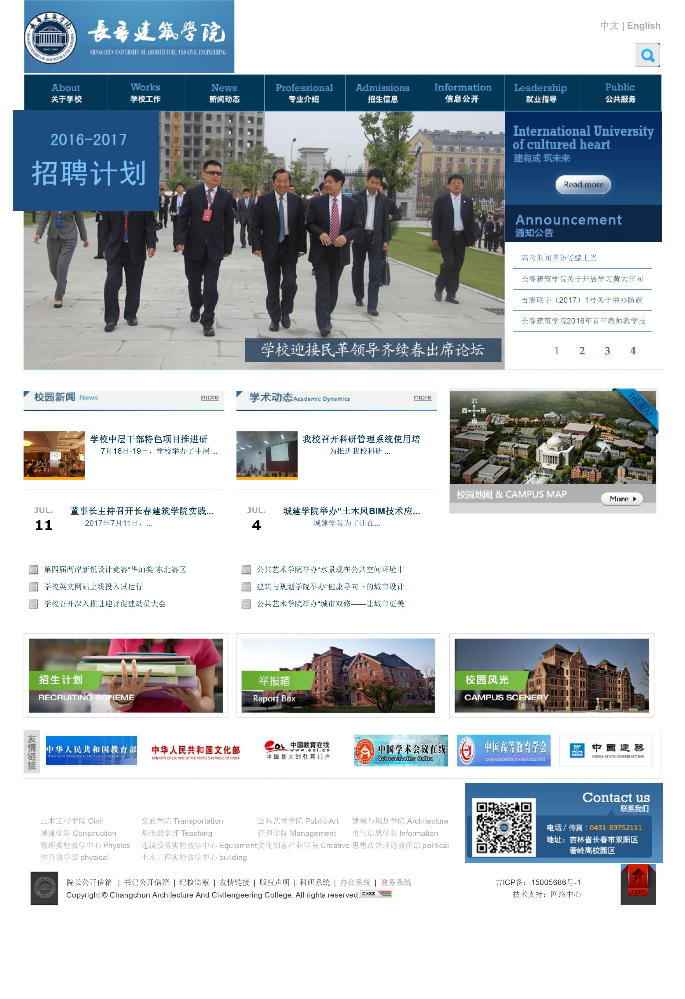

-
- Skill. 技能清单
-
能够用 HTML + CSS 编写语义化的代码，完成较复杂的布局，熟悉less 等css预处理、后处理工具
-
了解 Git Gulp 等开发工具
-
了解 Koa, Express, MongoDB, 能搭建简单的后端项目，使用github的静态空间去部署网站
-
- Experience. 项目经验
个人项目
-
Webjucks 2017.2 SourceCode
自己用node.js写了个网站，数据模板分离的思想与流行的mvc，调用node的模块，开发过程中主要是研究了怎么配置node的各个模块，怎么实时开发浏览结果，怎么安排项目结构。
-
UI-Component 2017.2 SourceCode
在写页面的过程中，自己总结提炼写了许多页面组件，已发布在github上。记录总结
-
百度前端学院 2017.2 SourceCode
17年春季百度前端学院，偶然了解加入，刷了一波题，感觉收获许多，具体的可以看我github
-
page 2017.4-至今 SourceCode
许多练手的页面，基于html语义规范化，css3的比较新的技术
实习项目
-
page 2016.7
这是我接手的第一个单页，为了适应团队框架完成页面我快速学习了模板引擎png，CSS预处理器less等等。
然后在实践中巩固，最终一个周左右实现了这个项目的前端部分。 -
taldumande 2016.9
这是项目前端已经能完全独立完成了，设计也有很多有趣的地方，像header，footer部分两种颜色，为了不影响其它布局也比较方便用伪元素解决。没有很难的地方，细节很多，也比较考验布局能力。

徐珉强的简历
-
- Basic info. 基本信息
- 个人信息: 徐珉强 / 男 / 23岁 / 大三
- 学校：长春建筑学院
- 专业：建筑电气及智能化
- 常用ID: eif
- Blog: https://www.xiao555.com.cn
- GitHub: https://eif-xu.github.io/
- 在线简历:https://xiao555.github.io/Resume/
-
- Contact.联系方式
- Email: 1012416749@qq.com
- QQ: 1012416749
- PhoneNumber: 18704398270
-
- Application. 应聘岗位
- Web前端实习生
-
- Tech. 技能点
HTML/CSSJavaScriptGitNode.js